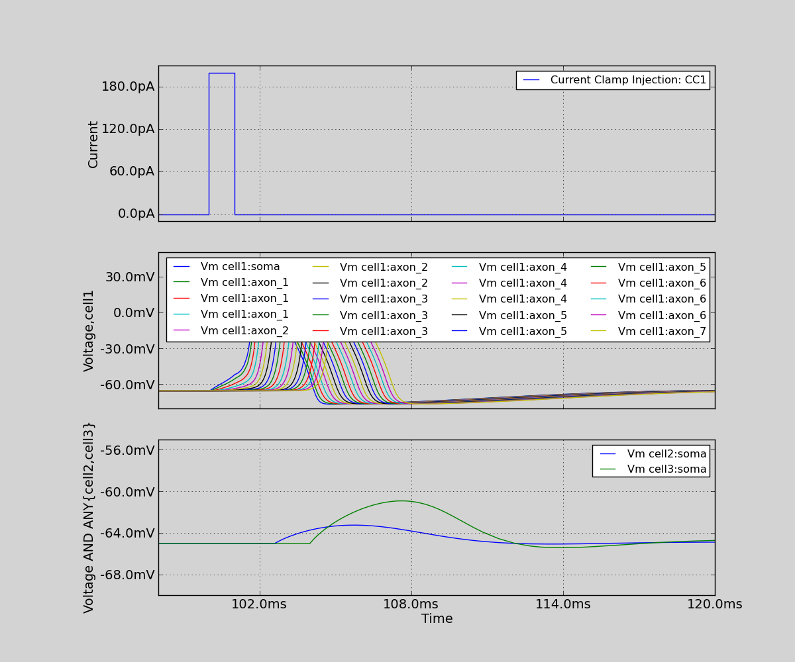

20. Action potential propagation and synaptic transmission
Action potential propagation and synaptic transmission. In this simulation, we create 3 neurons; Neuron 1 has an axon, and when the soma is stimulated, we see the action potential propagate along it. Neuron 1 forms synapses onto cell2 and cell3 with different strengths and different positions along the axon.
Code
import matplotlib as mpl
mpl.rcParams['font.size'] = 14
from morphforge.stdimports import *
from morphforgecontrib.stdimports import *
# Create a cell:
def build_cell(name, sim):
my_morph = MorphologyBuilder.get_soma_axon_morph(axon_length=1500.0, axon_radius=0.3, soma_radius=10.0)
my_cell = sim.create_cell(name=name, morphology=my_morph)
na_chls = ChannelLibrary.get_channel(modelsrc=StandardModels.HH52, channeltype="Na", env=sim.environment)
k_chls = ChannelLibrary.get_channel(modelsrc=StandardModels.HH52, channeltype="K", env=sim.environment)
lk_chls = ChannelLibrary.get_channel(modelsrc=StandardModels.HH52, channeltype="Lk", env=sim.environment)
my_cell.apply_channel(lk_chls)
my_cell.apply_channel(k_chls)
my_cell.apply_channel(na_chls)
my_cell.apply_channel(na_chls, where="axon", parameter_multipliers={'gScale':1.0})
return my_cell
# Create a simulation:
env = NEURONEnvironment()
sim = env.Simulation()
# Two cells:
cell1 = build_cell(name="cell1", sim=sim)
cell2 = build_cell(name="cell2", sim=sim)
cell3 = build_cell(name="cell3", sim=sim)
# Connect with a synapse:
simple_ampa_syn = """
define_component syn_simple {
g' = - g/g_tau
i = gmax * (v-erev) * g
gmax = 300pS * scale
erev = 0mV
g_tau = 10ms
<=> INPUT v: mV METADATA {"mf":{"role":"MEMBRANEVOLTAGE"} }
<=> OUTPUT i:(mA) METADATA {"mf":{"role":"TRANSMEMBRANECURRENT"} }
<=> PARAMETER scale:()
on on_event(){
g = g + 1.0
}
}
"""
post_syn_tmpl = env.PostSynapticMechTemplate(
NeuroUnitEqnsetPostSynaptic,
eqnset = simple_ampa_syn,
default_parameters = { 'scale':1.0}
)
syn1 = sim.create_synapse(
trigger = env.SynapticTrigger(
SynapticTriggerByVoltageThreshold,
cell_location = CellLocator.get_location_at_distance_away_from_dummy(cell1, 300),
voltage_threshold = qty("0:mV"), delay=qty("0:ms"),
),
postsynaptic_mech = post_syn_tmpl.instantiate(cell_location = cell2.soma,),
)
syn1 = sim.create_synapse(
trigger = env.SynapticTrigger(
SynapticTriggerByVoltageThreshold,
cell_location = CellLocator.get_location_at_distance_away_from_dummy(cell1, 700),
voltage_threshold = qty("0:mV"), delay = qty("0:ms"),
),
postsynaptic_mech = post_syn_tmpl.instantiate(cell_location = cell3.soma, parameter_overrides={'scale':2.0} )
)
# Record Voltages from axons:
for loc in CellLocator.get_locations_at_distances_away_from_dummy(cell1, range(0, 1000, 50)):
sim.record( what=StandardTags.Voltage, cell_location = loc, user_tags=['cell1'])
sim.record(what=StandardTags.Voltage, cell_location = cell2.get_location("soma"), user_tags=['cell2'])
sim.record(what=StandardTags.Voltage, cell_location = cell3.get_location("soma"), user_tags=['cell3'])
# Create the stimulus and record the injected current:
cc = sim.create_currentclamp(name="CC1", amp=qty("200:pA"), dur=qty("1:ms"), delay=qty("100:ms"), cell_location=cell1.get_location("soma"))
sim.record(cc, what=StandardTags.Current)
results = sim.run()
TagViewer(results, timerange=(98, 120)*units.ms,
fig_kwargs = {'figsize':(12, 10)},
show=True,
plots = [
TagPlot('Current', yunit=units.picoamp),
TagPlot('Voltage,cell1', yrange=(-80*units.mV, 50*units.mV), yunit=units.mV),
TagPlot('Voltage AND ANY{cell2,cell3}', yrange=(-70*units.mV, -55*units.mV), yunit=units.millivolt),
],
)
Figures

Download Figure
{kind=link}
Output
No handlers could be found for logger "neurounits"
2013-10-19 15:41:40,321 - morphforge.core.logmgr - INFO - Logger Started OK
2013-10-19 15:41:40,322 - DISABLEDLOGGING - INFO - _run_spawn() [Pickling Sim]
No handlers could be found for logger "neurounits"
2013-10-19 15:41:42,005 - morphforge.core.logmgr - INFO - Logger Started OK
2013-10-19 15:41:42,005 - DISABLEDLOGGING - INFO - Ensuring Modfile is built
NEURON -- Release 7.1 (359:7f113b76a94b) 2009-10-26
Duke, Yale, and the BlueBrain Project -- Copyright 1984-2008
See http://www.neuron.yale.edu/credits.html
Openning ScriptFlags
/auto/homes/mh735/hw/NeuroUnits/ext_deps
Loading StdLib file: /auto/homes/mh735/hw/NeuroUnits/src/neurounits/../stdlib/stdlib.eqn
Loading Bundle from: /local/scratch/mh735/tmp/morphforge/tmp/simulationresults/9a/9adfcfd0f8f94fb10fd216d51f921f91.bundle (48k) : 0.807 seconds
set(['conductance', 'reversalpotential'])
__dict__ {'mm_neuronNumber': None, 'cachedNeuronSuffix': None, 'reversalpotential': array(-54.3) * mV, '_name': 'LkChl', '_simulation': None, 'conductance': array(3.0) * s**3*A**2/(kg*m**4)}
loading membrane mechanisms from /local/scratch/mh735/tmp/morphforge/tmp/modout/mod_0b082b636334d63b27417ca014016a90.so
loading membrane mechanisms from /local/scratch/mh735/tmp/morphforge/tmp/modout/mod_0399d8f72ddafed0d172aeb0b7707773.so
loading membrane mechanisms from /local/scratch/mh735/tmp/morphforge/tmp/modout/mod_7f4097707d49d196da707a3f88c300f7.so
loading membrane mechanisms from /local/scratch/mh735/tmp/morphforge/tmp/modout/mod_67de8ab4c215459909d3fb83ce6b7aa5.so
1
1
0.01
0
1
50000
1
50000
1
50000
1
50000
1
50000
1
50000
1
50000
1
50000
1
50000
1
50000
1
50000
1
50000
1
50000
1
50000
1
50000
1
50000
1
50000
1
50000
1
50000
1
50000
1
50000
1
50000
1
50000
1
Running Simulation
Time for Extracting Data: (23 records) 0.0109360218048
Running simulation : 1.318 seconds
Post-processing : 0.025 seconds
Entire load-run-save time : 2.150 seconds
Suceeded
Openning ScriptFlags
/auto/homes/mh735/hw/NeuroUnits/ext_deps
Loading StdLib file: /auto/homes/mh735/hw/NeuroUnits/src/neurounits/../stdlib/stdlib.eqn
<Parameter [id:90620752] Symbol: 'scale' >
scale
iii 1.0 dimensionless <class 'quantities.quantity.Quantity'>
iiii 1.0 <type 'float'>
Output <StateVariable [id:90603280] Symbol: 'g' >
None
Output <AssignedVariable [id:90620560] Symbol: 'gmax' >
None
Output <AssignedVariable [id:90602448] Symbol: 'i' >
{u'mf': {u'role': u'TRANSMEMBRANECURRENT'}}
input <SuppliedValue [id:90621136] Symbol: 'v' >
{u'mf': {u'role': u'MEMBRANEVOLTAGE'}}
gmax <class 'neurounits.ast.astobjects.AssignedVariable'>
v <class 'neurounits.ast.astobjects.SuppliedValue'>
g <class 'neurounits.ast.astobjects.StateVariable'>
scale <class 'neurounits.ast.astobjects.Parameter'>
Writing assignment for: <EqnAssignmentByRegime [id:90620688] Symbol: gmax >
scale <class 'neurounits.ast.astobjects.Parameter'>
Writing assignment for: <EqnAssignmentByRegime [id:90620368] Symbol: i >
gmax <class 'neurounits.ast.astobjects.AssignedVariable'>
v <class 'neurounits.ast.astobjects.SuppliedValue'>
g <class 'neurounits.ast.astobjects.StateVariable'>
g <class 'neurounits.ast.astobjects.StateVariable'>
<neurounits.codegen.nmodl.MODLBuildParameters object at 0x5667910>
g <class 'neurounits.ast.astobjects.StateVariable'>
PlotMnager:Saving _output/figures/poster2/{png,svg}/fig000_Autosave_figure_1.{png,svg}